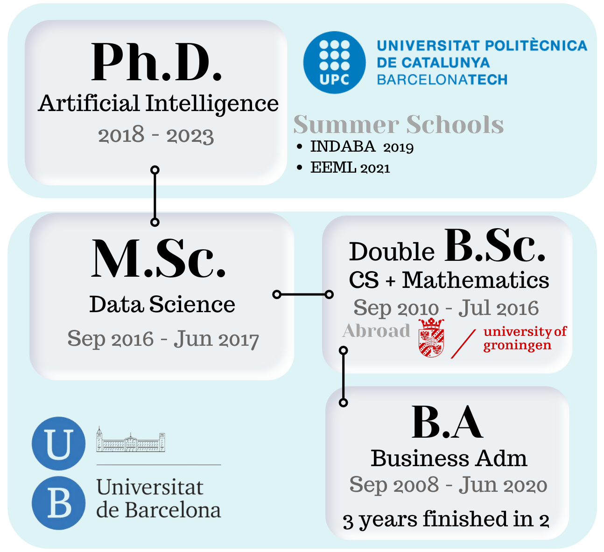
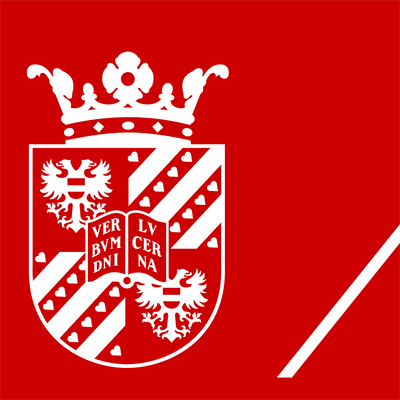

Education

- Double BSc in Mathematics and Computer Science
- BSc in Business Administration completed in 2 years, despite being a 3-year official program with an average completion time above 5 years
- MSc in "Foundations of Data Science"
- PhD in Artificial Intelligence
Polytechnic University of Catalonia
Doctor of Philosophy - PhD · Artificial Intelligence and Smart Mobility 2018 - 2022
Kenyatta University
Summer School · Deep Learning Indaba 2019 2019 - 2019
Strengthen African Machine Learning.
University of Barcelona

Master of Science - MS · Fundamental Principles of Data Science 2016 - 2017
Machine Learning, Deep Learning, Bayesian Statistics, Optimization, Numerical Linear Algebra, Complex Networks, Probabilistic Graphical Models...
University of Groningen

Bachelor of Science - BS · Mathematics and Computer Science 2016 - 2016
Neural Networks, Computer Graphics, Algebraic Structures, and Geometry and Topology. Bachelor thesis with title: Can a CNN recognize Mediterranean food?
University of Barcelona
Bachelor of Science - BS · Mathematics 2010 - 2016
University of Barcelona
Bachelor of Engineering - BE · Computer Engineering 2010 - 2016
University of Barcelona
Bachelor of Business Administration - BBA · Business Administration and Management 2008 - 2010